About Tanzania
About Tanzania Mount Kilimanjaro, the highest peak in Africa, attracts adventurers from around the world. Most travelers stay in the nearby town of Moshi, both before and after climbing Kilimanjaro, making it a key stop on their journey.
Located at the foot of the mountain, Moshi town serves as the gateway to Kilimanjaro and is the capital of the Kilimanjaro region. It is the largest city in the area and the cultural heart of the Chagga people. Its low-rise buildings and tranquil atmosphere provide a peaceful retreat for travelers.
In this article, we will explore what Moshi and its surroundings have to offer, from natural attractions and local cuisine to the rich traditions of the Chagga people.
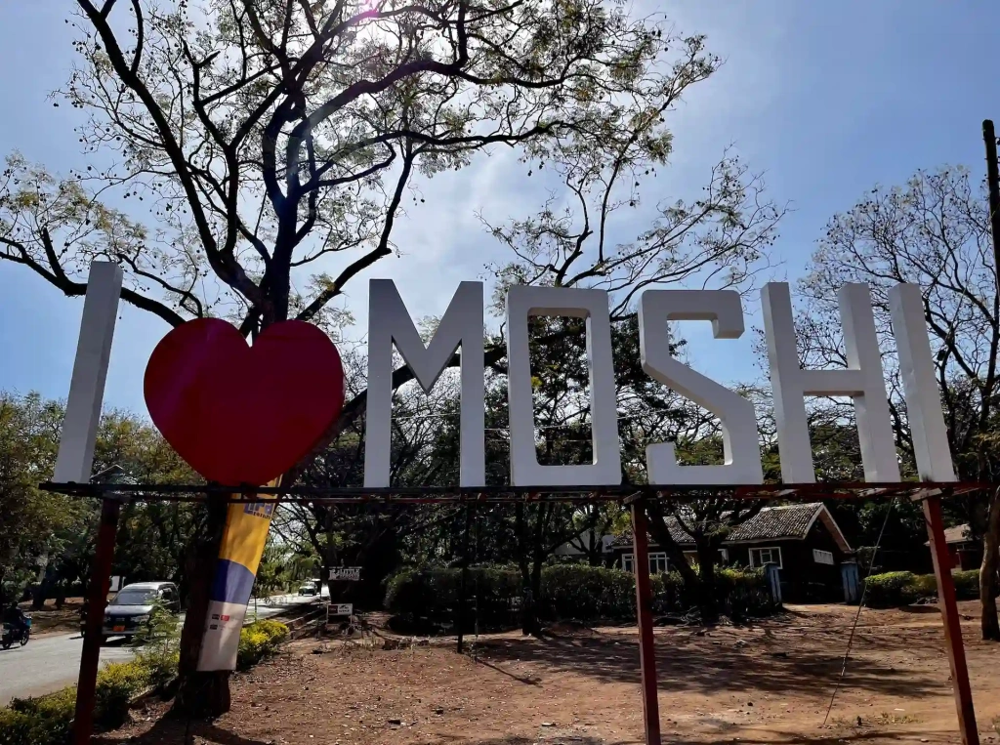
Materuni Waterfall and local coffee tours
The lower slopes of Kilimanjaro feature several large and beautiful waterfalls. The most famous of them is Materuni, located in the village of the same name, about a half-hour drive from downtown Moshi.
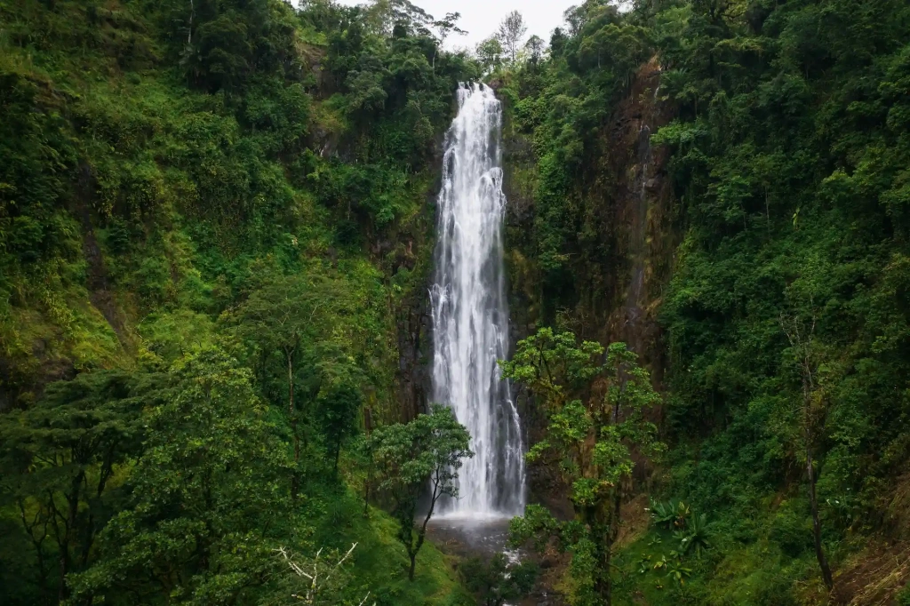
Duration of the tour: 5 to 6 hours.
After arriving at the starting point, you will take a scenic walk to the waterfall. The views are breathtaking, showcasing a panorama of the Mware River valley, the lower slopes of the mountain, and the plains surrounding Kilimanjaro. Along the way, visitors can observe local village life and have a great chance of spotting colorful chameleons that inhabit the bushes along the trail.
Following a thirty-minute walk, you will be treated to the stunning sight of an 80-meter (262-foot) waterfall. Following heavy rains, the waterfall is particularly full and awe-inspiring. When the water is clear, visitors can take a refreshing dip in the chilly pool beneath the falls.
The second part of the tour centers around the aromatic Kilimanjaro coffee. For more than a century, farmers have cultivated high-quality Arabica coffee on the slopes of Mount Kilimanjaro. You will experience all the stages of its preparation and have the opportunity to taste freshly brewed coffee.
All tour participants have the chance to get involved in the process. Coffee beans need to be separated from their husks, sifted, roasted, ground into powder in a large wooden mortar, and brewed over an open fire. This experience is filled with the lively dances and cheerful songs of the Chagga people. Many of them have small coffee plantations and are skilled in coffee cultivation.
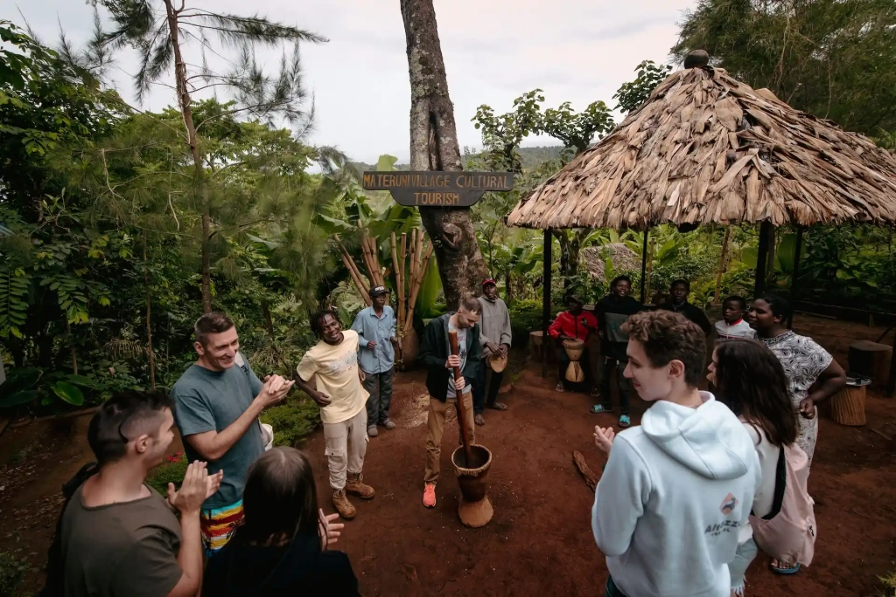
The experience concludes with freshly brewed coffee and a delicious lunch. Guests enjoy traditional Tanzanian food during their meal. The common dishes are mtori (stewed meat with bananas), rice, bean stew, and plenty of mboga (green vegetables).
On a clear day, you can see the snow-capped peak of Kilimanjaro right from the dining area.
Chemka hot springs
Not far from Moshi lies a true paradise that offers visitors unforgettable experiences. The Chemka hot springs feature small pools filled with clear, warm water, nestled among palm trees and lush vegetation. Photographers often visit specifically to capture the beauty of this location. It feels like such stunning places can only be found on distant tropical islands, yet one of them is right here near Mount Kilimanjaro.
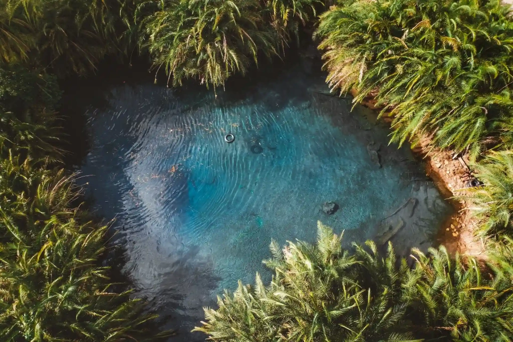
Duration of the tour: 5 to 6 hours.
Chemka Hot Springs is a geothermal oasis, replenished by clean groundwater. The lakes have an outlet to the river, and a current helps maintain the water's clarity. The maximum depth of the lakes is about 10 meters (30 feet). Snorkeling here is fascinating: you can spot small fish and, occasionally, monitor lizards.
Another name for this location is Kikuletwa Hot Springs. The springs are sometimes called Maji Moto, which means "hot water" in Swahili. The water temperature in Chemka remains around 27°C (81°F), making it possible to swim here year-round.
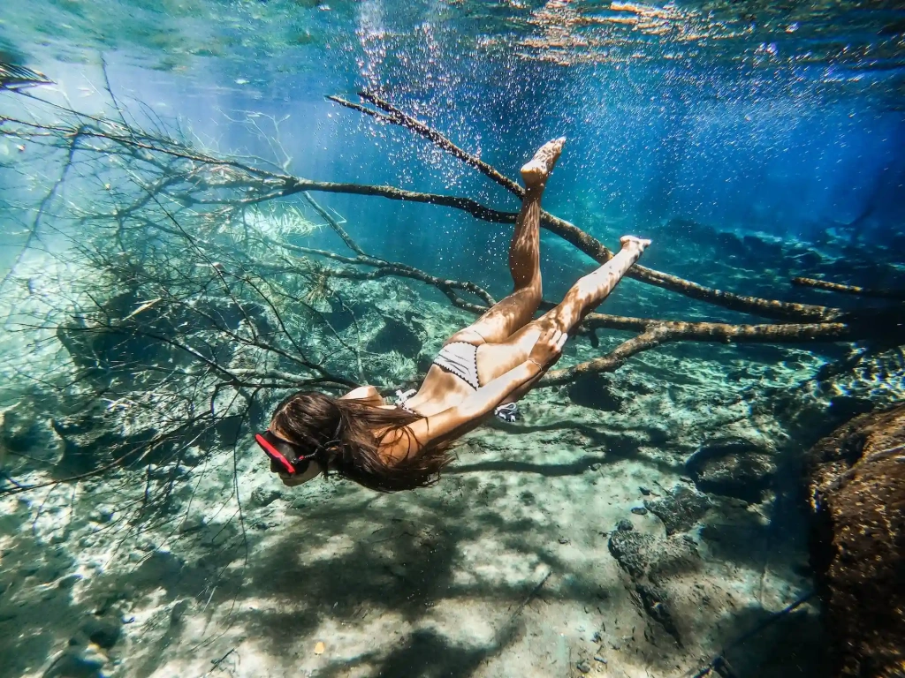
The ideal time to visit Kikuletwa Hot Springs is in the early morning. As noon approaches, local residents start to arrive, making the area quite crowded and noisy. Large groups often come with music and barbecue grills set up over open fires. A swing is attached to one of the trees overlooking the lake, making it perfect for impressive jumps into the water. Inflatable rings are available for rent, as not everyone in mainland Tanzania knows how to swim.
During the low season (April-May), crocodiles may occasionally be spotted in the Chemka area, which makes it unsafe to visit the springs at that time. It is best to plan your visit for other times of the year.
Rau Nature Forest Reserve
Just 3km (1.8 mi) southeast of Moshi, you'll find a forest reserve with clean groundwater, fresh air, and the Rau River, which collects water from the slopes of Mount Kilimanjaro. Here, you can explore the area on foot with guides or enjoy a bike ride on rented bicycles.
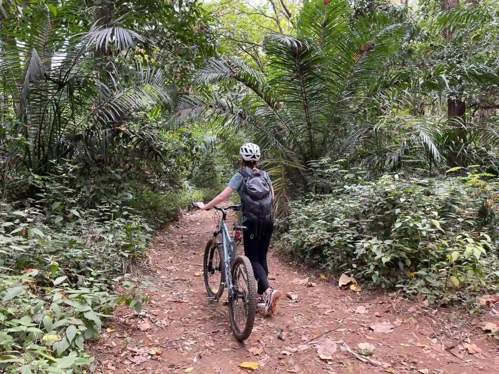
Not many travelers know about this place, so you won’t run into large crowds of tourists. If you appreciate nature, peace, and solitude, we suggest setting aside a few hours to visit Rau.
Duration of the tour: 3 hours.
The forest reserve is home to 71 species of trees, including the East African endemic Prioria msoo. This sturdy legume is prized for its durability and is often used in shipbuilding. It is found exclusively in Tanzania and Kenya.
The most significant treasure of the reserve is the ancient African teak, known scientifically as Milicia excelsa. Locals highly value this tree, using its bark in rituals and traditional medicine. In Swahili, it is referred to as mvule. This tree is recognized as the oldest and largest African teak in Tanzania, with reports estimating its age at around 200 years and its height reaching 51 meters (167 feet).
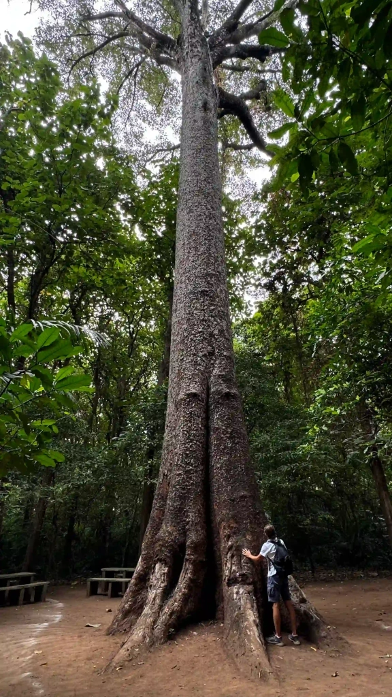
In the forest, you might spot stunning colobus monkeys, along with blue monkeys and small forest antelopes. The area is also home to various butterflies and birds, as well as numerous insects to observe. Additionally, nearby rice fields attract waterfowl, providing further opportunities for wildlife watching.
Nestled deep in the forest, close to the ancient African teak, you'll find a designated picnic area. In addition to walking and biking through the reserve, you can enjoy birdwatching and observe monkeys and other wildlife in their natural habitat.
Lake Chala
East of Moshi, right on the border with Kenya, lies Lake Chala. This stunning crater lake is known for its unique geography. Formed 250,000 years ago, the lake was filled with groundwater and is now nestled within the high stone walls of the crater. Its shores are lined with trees, providing a favorite playground for monkeys. The lake’s azure-blue surface shifts in color, reflecting the changing light conditions throughout the day.
Duration of the tour: 5 to 7 hours.
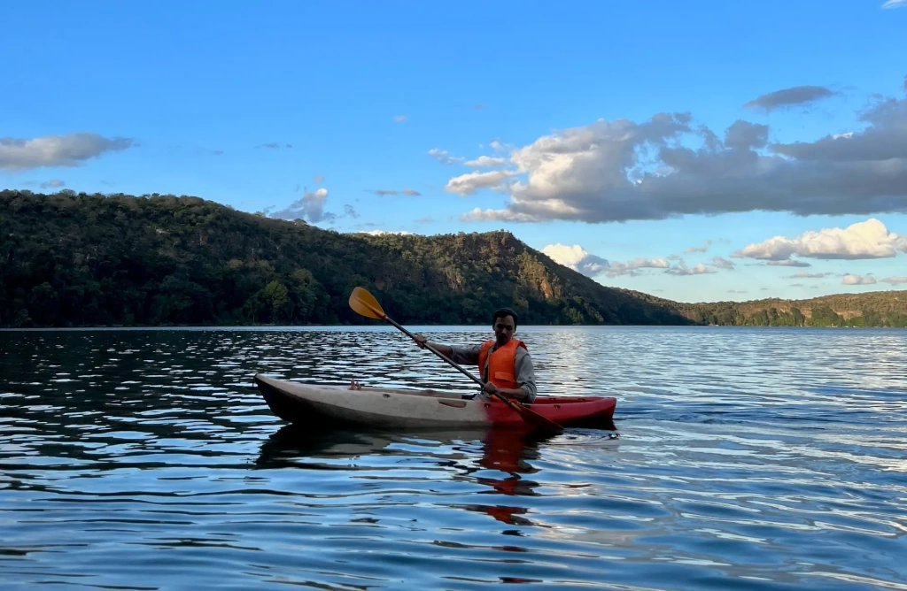
People visit Lake Chala mainly for kayaking. Though this crater lake isn’t very large, it has more than four square kilometers (1.5 square miles) of surface area, providing plenty of space for paddling. Interestingly, the border between Tanzania and Kenya runs right through the middle of the lake, dividing it almost evenly between the two countries.
Lake Chala is considered safe, with no hippos, crocodiles, or schistosomiasis in the water. Many believe that Chala is one of the few lakes in Africa suitable for swimming.
The area around Lake Chala is home to colobus monkeys, baboons, and blue monkeys. Visitors can also spot small dik-diks and various bird species, including numerous raptors. Occasionally, large elands and elephants can be seen near the lake as they migrate between Kenya's Tsavo West National Park and Tanzania.
Is there anything to do in Moshi?
Moshi is a great destination for tourists interested in experiencing Tanzanian urban life. As you stroll through the city, you'll notice many Swahili-Indian buildings dating back to the mid-20th century. The city also boasts a variety of cafés and restaurants serving traditional local dishes. Numerous souvenir shops offer an array of handmade items, including jewelry, accessories, and paintings by local artists.
City walks
The main tourist streets in Moshi are Mavenzi Road, Market Street, and Arusha Road. The city's central artery, Double Road, is a great starting point for exploring. A walk along this road is highly recommended to get a sense of the city's atmosphere.
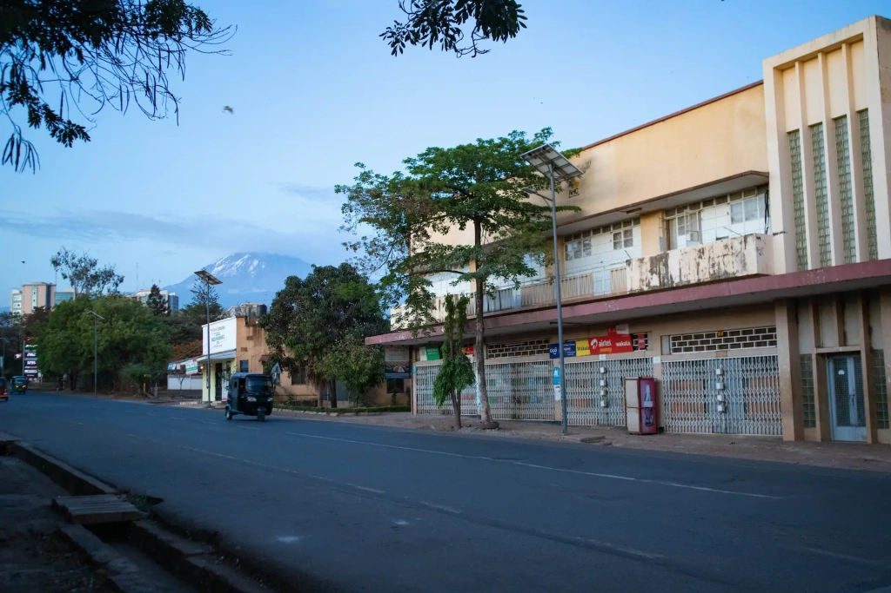
Exploring the city can be even more fun by hopping into a bajaji (this is the local name for a tuk-tuk). These three-wheeled motorized vehicles are a popular and affordable way to get around Moshi. They’re not only safe but also add a bit of excitement to exploring the city.
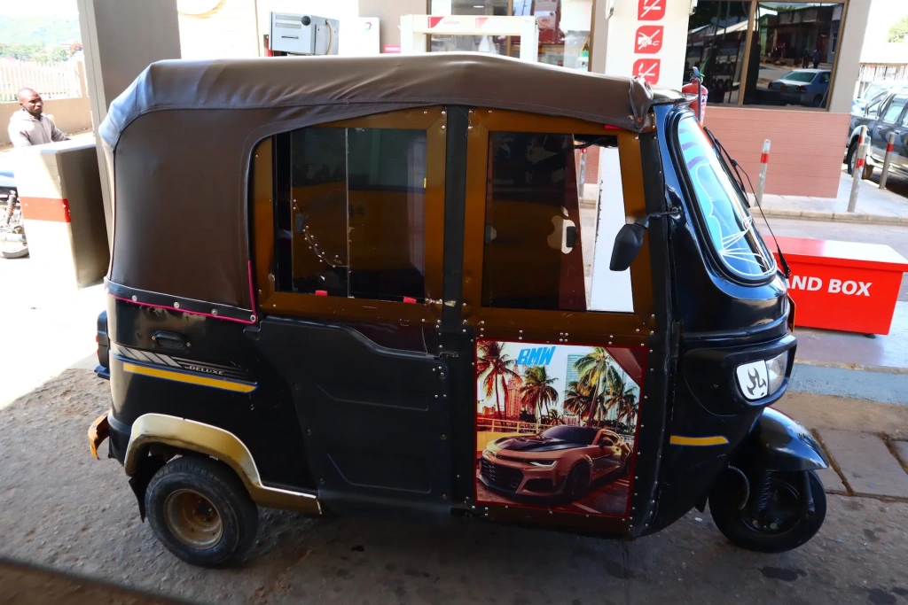
It's worth noting that walking around Moshi presents certain peculiarities. You will likely encounter persistent street vendors, souvenir shop touts, and "helpers" hoping for tips. While they are generally friendly and not dangerous, their persistence can bother some visitors. Unfortunately, little can be done about it, as this is simply part of the local communication culture in Tanzania.
Where is the best local coffee in Moshi?
Moshi is renowned as a coffee town, boasting a rich tradition of cultivating and brewing this aromatic beverage. At the central roundabout with the clock tower, you’ll find a 24-hour coffee shop known for its excellent Kilimanjaro coffee. Another must-visit spot for coffee lovers is the historic Coffee Union Cafe, established in 1939 by the Kilimanjaro Native Cooperative Union.
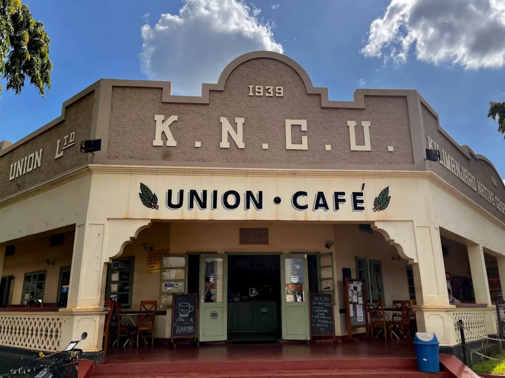
Another unique spot to enjoy coffee is the café at the old Moshi railway station. Built in 1911 and unused since the 1990s, the station now provides locals and visitors with a delicious and slightly nostalgic experience.
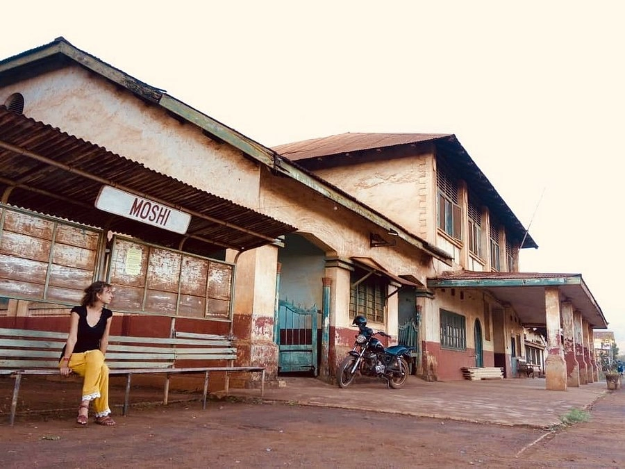
What to eat in Moshi?
Numerous cafes are eager to welcome those looking to try simple local dishes, and you can choose based on online reviews. At cafes such as East Africa Pub, Green Bamboo Restaurant, or Secret Garden Hotel Restaurant, you’ll definitely get a taste of local cuisine. Such places typically offer potato omelets (called chipsi mayai), kachumbari salad, chapati bread, and a thick porridge made from corn flour, served with stew and greens, and traditionally eaten by hand. You can also enjoy samosas, fried pastries typically filled with meat. Popular beverages include ginger tea, milk tea, cold soda, and local beers.
You can also enjoy a meal at Shirikisha Garden, a wonderful social enterprise that empowers deaf individuals and others striving to positively impact the community. While there, you can browse through beautifully crafted items like wallets and bags, or simply relax and take in the views of their lovely garden.
To sample street food, look for popular local spots. You'll find the most options near the bus station next to the large mosque. There, you can sample samosas, chapati, skewered meat called mishkaki, and fried corn seasoned with lemon and pepper. We highly recommend trying the fried cassava with spices and kachumbari.
Street food in Moshi is typically prepared in the evening as darkness falls.
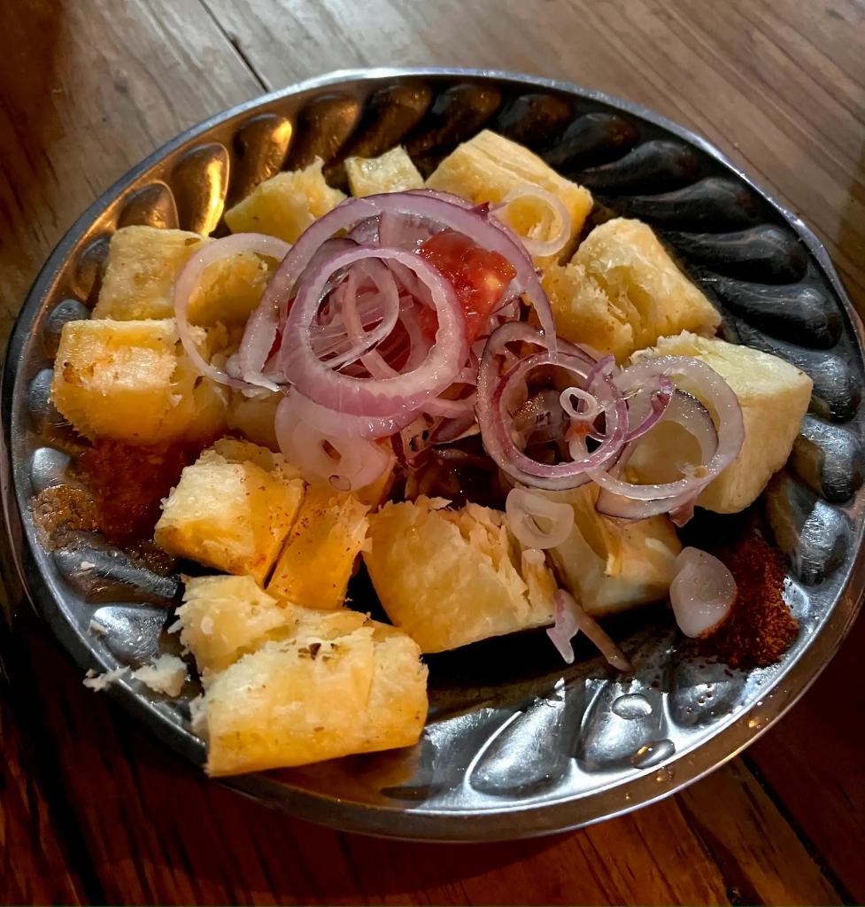
The city also has several restaurants offering Indian, Italian, Korean, Mexican, and other cuisines.
What to buy in Moshi?
Moshi is filled with souvenir shops that you can visit during your walks or head directly to based on Google Maps reviews. As you explore, you'll likely encounter street vendors and various touts. Simply decline their offers politely and continue on your way without getting distracted.
In Moshi, there are two major local markets:
- Mbuyuni Market
- Memorial Market.
Feel free to visit them if you enjoy immersing yourself in the shopping life.
Mbuyuni is a vibrant market offering a variety of fresh vegetables and fruits. You can always find watermelons, pineapples, bananas, passion fruits, and much more available for purchase.
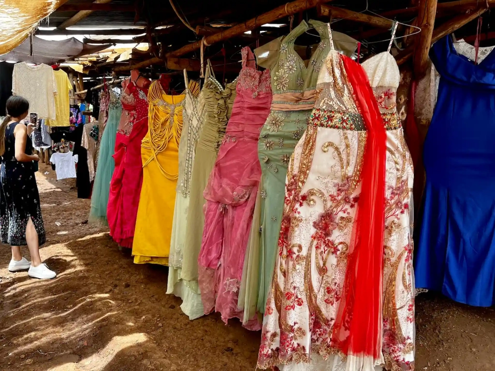
Memorial Market is a bustling clothing market primarily featuring second-hand clothes, shoes, and various accessories. It's a great spot for vintage clothing enthusiasts to discover unique outfits. Be prepared to bargain energetically. The locals in Moshi engage in this practice with smiles and evident enjoyment, so embrace the experience and have fun with it!
For regular grocery shopping, the 24-hour Viva supermarket and stores from the Rafiki chain are the best options.
The tallest tree in Africa
A tree on the southern slope of Kilimanjaro is regarded as the tallest in Africa, reaching a height of 81.5 meters (268 feet). Visitors can get an up-close view of this magnificent tree and take photos to capture the moment. The easiest way to get there is from Moshi, with a journey of about half an hour to the trail that leads to the tree.
The tree belongs to the species Entandrophragma excelsum and is locally known as mkukusu. Scientists announced the discovery of this record tree in 2016, but so far, the hike to it has not gained much popularity. This keeps the trail uncrowded, providing visitors with a peaceful walk through the enchanting Kilimanjaro forest.
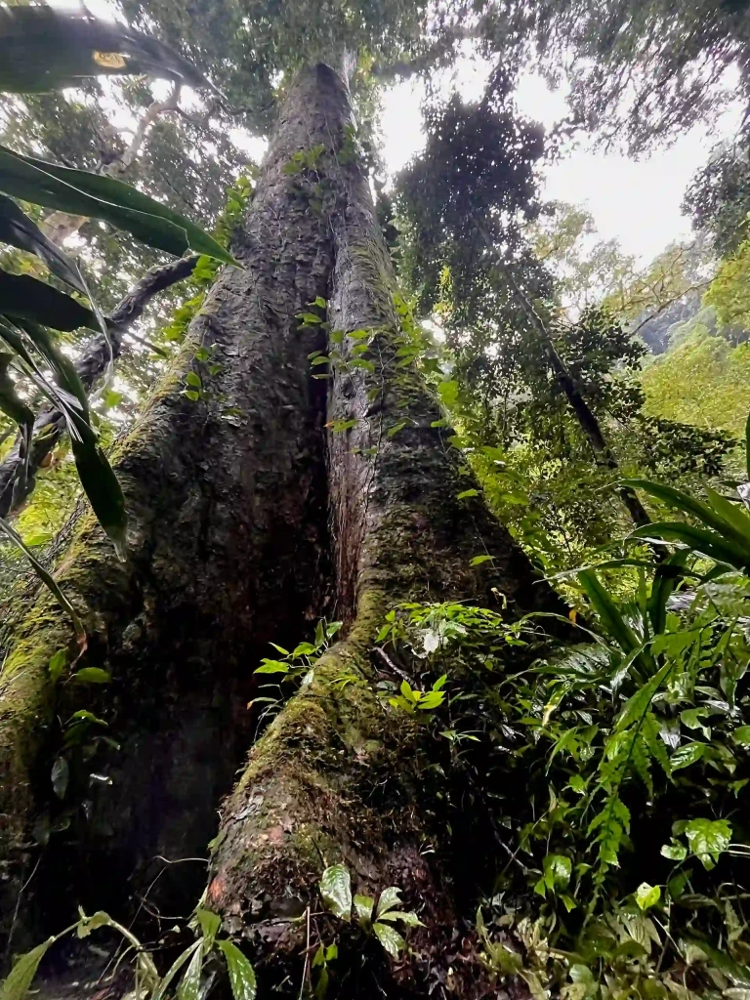
Duration of the tour: 3 to 4 hours.
First, visitors arrive at the village of Tema, located near Moshi. The road ascends the slope of Kilimanjaro. Cars might not make it to the northern end of the village, so you may need to take a short motorcycle ride or walk through it. The trail through the mountain forest begins at the end of the village and takes about an hour to traverse one way. Along the way, tourists walk through the forest, cross mountain rivers, and, if lucky, spot forest birds and small animals. The views from the slopes of Kilimanjaro are breathtaking.
Birdwatching in Moshi
Moshi and the Kilimanjaro region aren’t as popular for birding as places like Ngorongoro, Serengeti, or Tarangire. Nevertheless, birdwatching enthusiasts will find numerous opportunities to explore and appreciate the local avian diversity.
If you have time, we highly recommend visiting Tarangire National Park for birdwatching. It’s a paradise for bird enthusiasts, with over 550 species of birds to observe. Colorful residents like the Yellow-Necked Spurfowl, White-Crowned Shrike, and Black-Necked Weaver often fill the skies, making every visit a delight for dedicated ornithologists and casual bird lovers.
Mkomazi and Arusha National Parks, located near Moshi, offer the richest bird habitats and the highest species diversity. Mkomazi is home to over 350 bird species, while Arusha has around 600. We’ll provide more details about these parks later.
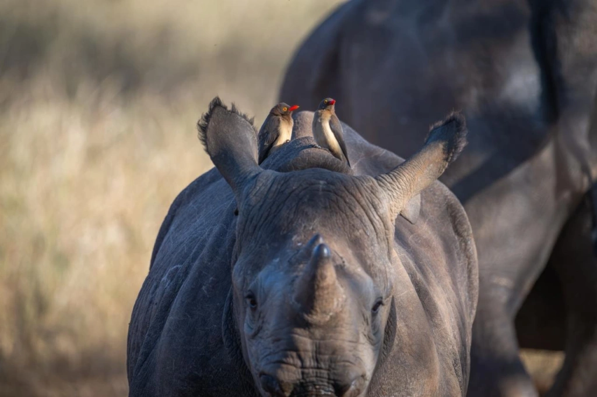
Among the locations nearest to the city, the sugarcane plantations to the south are especially noteworthy. The network of irrigation canals filled with fresh water and the plentiful insects make it an attractive bird spot. Additionally, the land to the west of Kilimanjaro holds potential for birdwatching.
Near the Kenyan border, many birds can be found around the Nyumba ya Mungu reservoir and Lake Jipe.
In the city, birdwatchers frequently flock to the central Uhuru Park. This open green space offers a convenient location for spotting birds, although the variety may be limited.
It’s much more enjoyable to explore outside the city, staying in eco-friendly hotels and walking around the surrounding areas. Some great options include the Ngare Sero Mountain Lodge near Arusha National Park, Ndarakwai Ranch, and Simba Farm Lodge in Western Kilimanjaro.
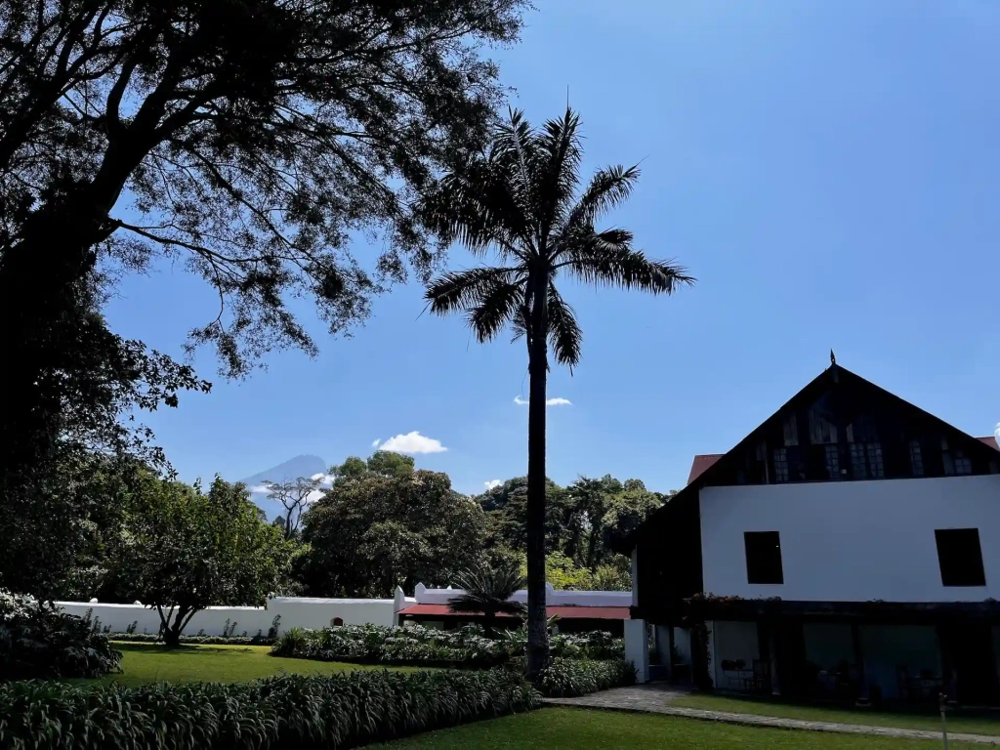
Arusha National Park
Arusha is the closest national park to Moshi, aside from Kilimanjaro National Park. You can reach it in about an hour and a half, making visiting the park in just one day feasible.
The main highlight of this national park is the chance to walk through the savannah, where wild animals roam freely. You can spot zebras, giraffes, buffalo, antelopes, and other residents of the African plains. Unlike in most other parks, where exiting a safari vehicle is prohibited, here it's a must-do experience.
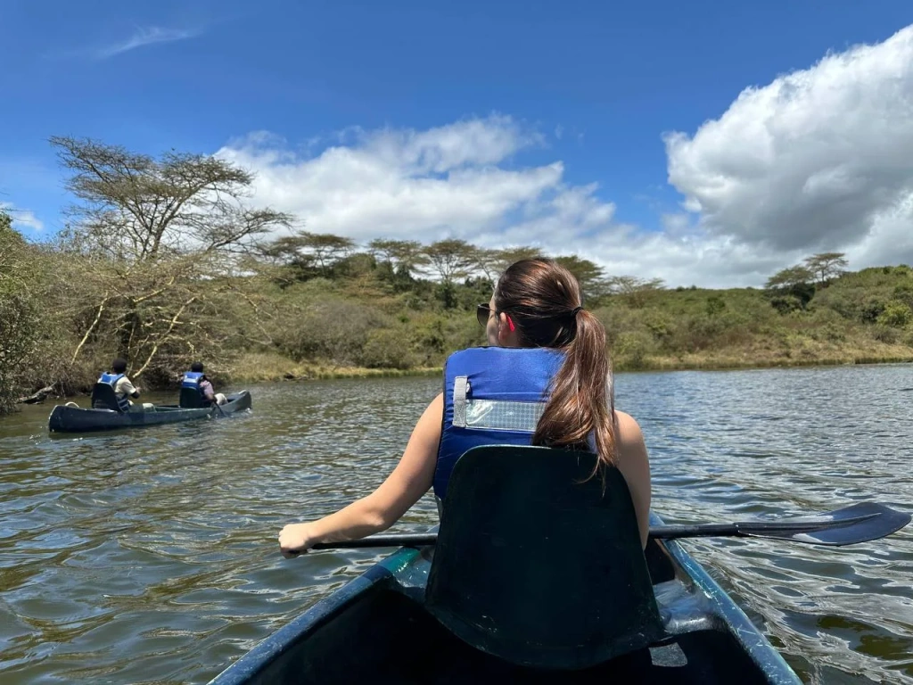
In addition to hiking along the national park's trails, you can go kayaking on Lake Momella. Unlike Lake Chala, this lake offers the chance to see many birds and other animals right from the water. The breathtaking view of Mount Meru rising in the center of the park adds to the charm, and on clear days, you can even catch a glimpse of Kilimanjaro from here.
During your visit to the park, an armed ranger will accompany you for safety. The ranger is trained to handle encounters with wildlife, so you can feel secure throughout your experience.
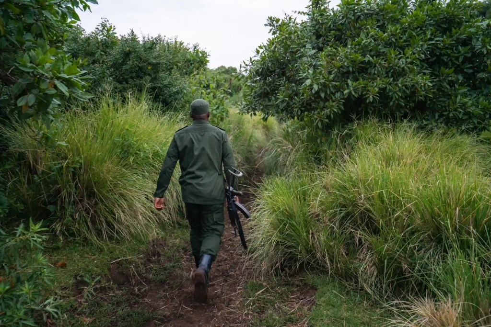
Duration of the tour: 6 to 8 hours.
Mkomazi National Park
Another park located relatively close to Moshi is Mkomazi. It's a tranquil national park that isn’t among the most frequented in northern Tanzania, making it especially attractive to travelers who wish to escape the crowds.
Duration of the tour: 1 to 3 days.
Mkomazi National Park is undoubtedly one of Tanzania's hidden gems. This park remains largely off the radar for most tour operators and travelers. However, it offers a wealth of sights: surrounded by mountains, it boasts vast plains inhabited by large herds of elephants and numerous giraffes. There are also two sanctuaries dedicated to rare animals.
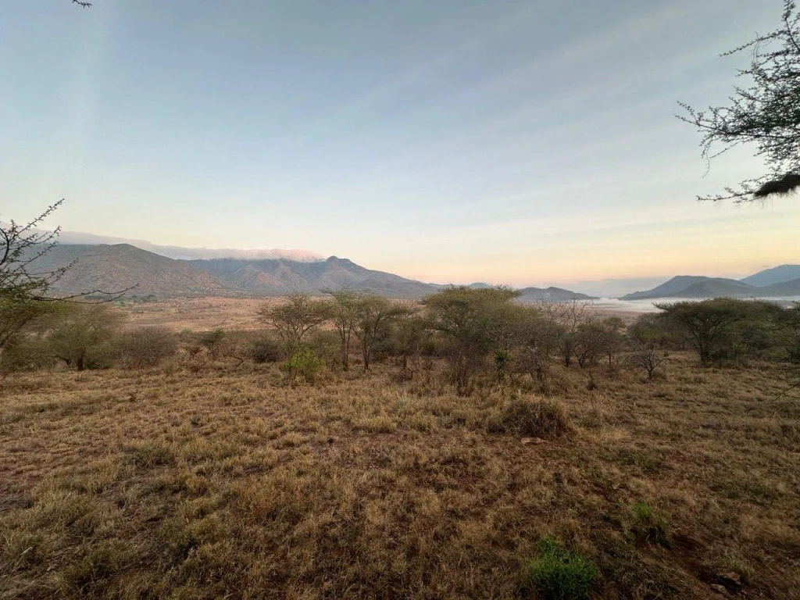
Within this park, there are sanctuaries for:
- Black rhinos
- African wild dogs.
The black rhino is a rare species on the brink of extinction, and in Mkomazi, you’re likely to see them up close.
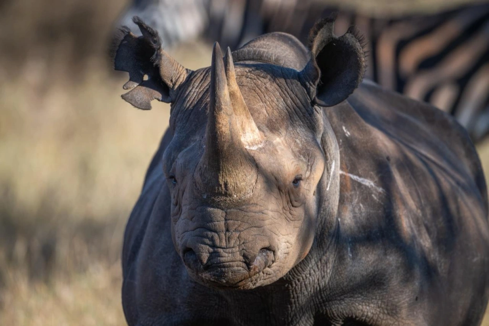
The African wild dog is another species that relies on human intervention for its survival. It is classified as endangered. In Mkomazi, you can see these wild dogs in a large enclosure, where they’re bred for other parks
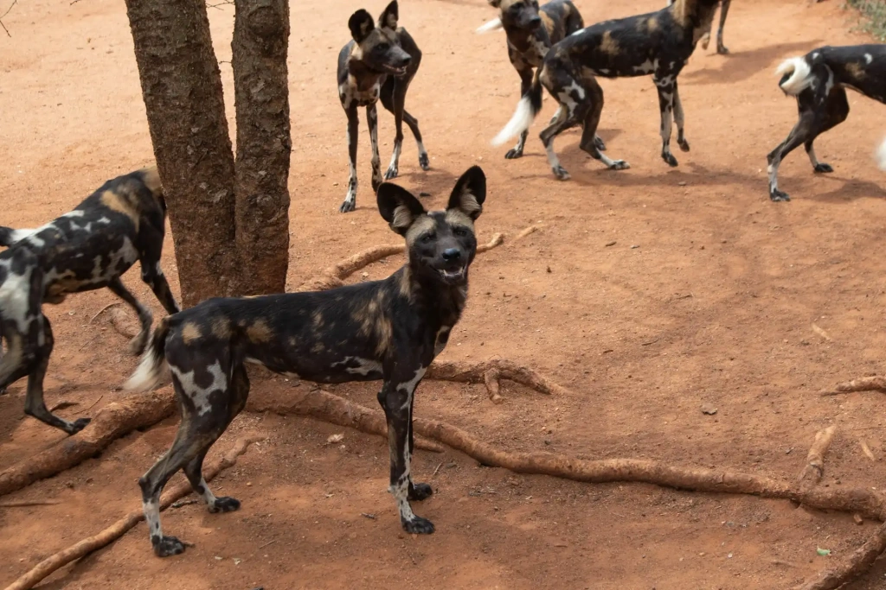
Although the chances of spotting wildlife in Mkomazi may not be as high as in the Ngorongoro Crater, many animals still roam the area. Many animals, including lions, roam large territories, often crossing into Western Tsavo in Kenya.
Mkomazi is a great choice for birdwatchers looking for a peaceful spot away from the tourist crowds. If you appreciate solitude, you'll love exploring this hidden gem.
We recommend spending not just one but two to three days in Mkomazi. Its remote location and lower animal density make it ideal for extended exploration. If you have the time, Mkomazi is a fantastic choice for enjoying a peaceful retreat in the wilderness.
Other points of interest and types of leisure near Moshi
In Moshi, there are plenty of activities to enjoy if you plan to spend a few days or even weeks here. Here are some other examples of interesting leisure activities.
Golf
Golf enthusiasts can look forward to courses with stunning views. The TPC Club golf course, located near the sugarcane plantations, features a 9-hole course just outside Moshi. On clear days, you can admire the magnificent peak of Kilimanjaro from there.
Kilimanjaro Golf Club, situated south of Arusha National Park, offers both 9-hole and 18-hole courses. From the Kiligolf area, you can enjoy panoramic views of both majestic Meru and Kilimanjaro.
If you want to play golf at the foot of the Roof of Africa, pay attention to Moshi Club. The Moshi Club 9-hole golf course is one of the oldest in Tanzania.
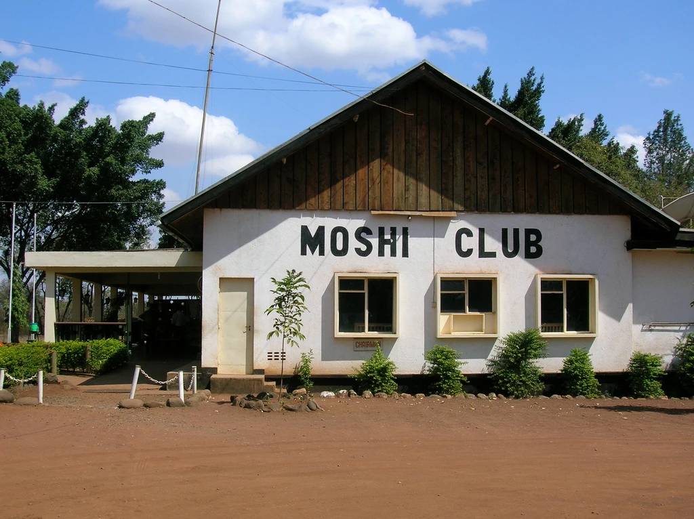
Cultural tours in Chagga and Maasai villages
For those interested in the culture, lifestyle, and traditions of local communities, Moshi and its surroundings offer thematic museums and authentic villages to explore. The region is primarily inhabited by the Chagga people, and as you walk through the city and visit nearby villages, you'll frequently encounter members of this community.
You can visit Marangu village, the main historical settlement of the Chagga people, which is located about an hour's drive from the center of Moshi. In Marangu, you'll discover a Chagga museum, ancient caves where locals once sought refuge from raids, and important memorial sites significant to the community.
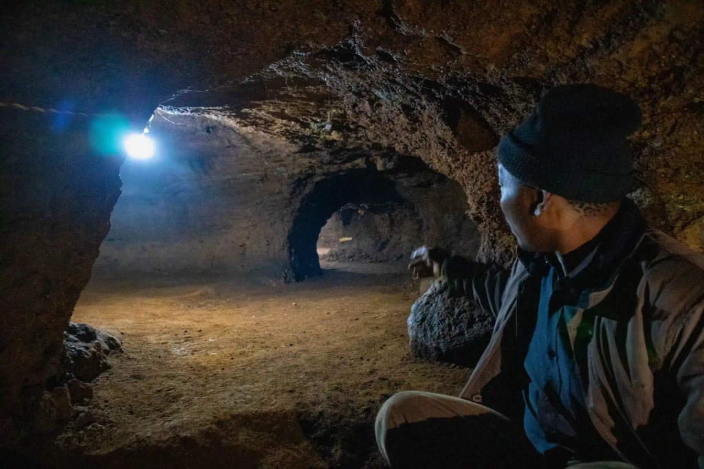
In contrast, the Maasai are a nomadic tribe, which often makes engaging with their culture more accessible. You're likely to see Maasai men in Moshi. Dressed in their traditional checkered shuka wraps, they do their daily activities or sell shoes on the street. In some countryside hotels, Maasai dances and songs are a popular ritual for welcoming guests. To the west of Kilimanjaro, you can find Maasai villages with locals eager to share insights into their community's daily life.
Coffee farm tours
We’ve already mentioned private coffee farms where you can sample coffee while visiting Materuni Waterfall. In addition to these small farms, there are also professionally managed plantations on the slopes of Kilimanjaro that welcome visitors. On a coffee tour here, you can witness the entire process, from harvesting the beans to roasting and brewing the final drink. Of course, the experience varies depending on the season. Coffee ripens on Kilimanjaro between September and December and from March to May.
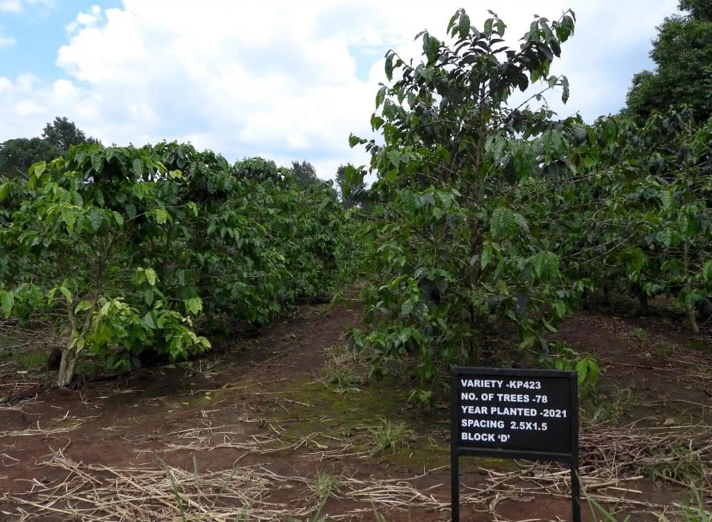
Kilimanjaro and its neighborhood
Moshi’s main attraction is, of course, Kilimanjaro, renowned for being the highest free standing mountain in Africa. If you're planning to reach the summit, you're probably not interested in the one-day tours offered by many companies. However, Kilimanjaro has more to offer than just summit climbs, with various other activities to enjoy on the mountain.
Group bike tours are organized in Moshi, offering options for different preferences. You can choose a relaxed countryside route on flat terrain or a more challenging urban ride through Moshi's hilly streets. For a more adventurous experience, there is also a three-day biking route around Kilimanjaro.
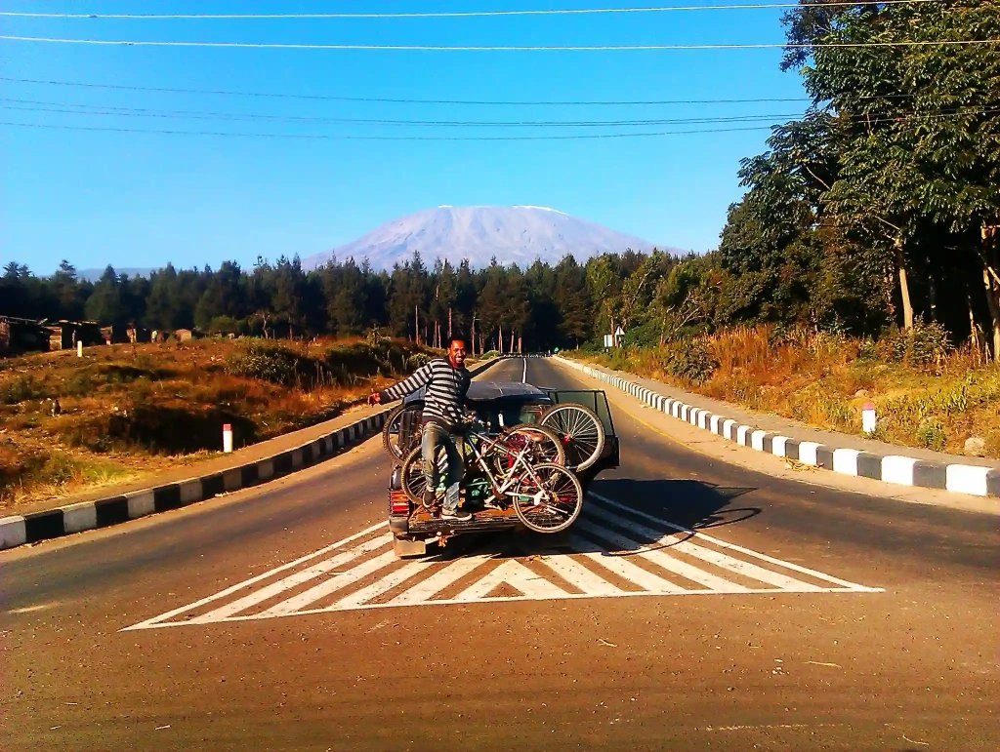
If biking isn’t your thing but you’re looking for a luxurious adventure, you can take a helicopter flight around Kilimanjaro. This scenic tour offers breathtaking views of the majestic mountain crowned with glaciers, the sprawling city of Moshi below, and the vast plains stretching out toward Lake Chala on the horizon.
Choose an activity in Moshi that excites you and make the most of your time at the foot of Kilimanjaro.
What places should tourists avoid?
Finally, we'd like to mention a place we don't recommend visiting. Situated west of Kilimanjaro, the Serval Wildlife Lodge is a popular tourist destination renowned for offering photoshoots with wild animals, including zebras, giraffes, and lions. The lodge's Instagram has stunning pictures and videos of guests happily feeding and hugging these animals.
Serval Wildlife acquires animals from captivity, often separating them from their parents, and uses them for commercial purposes. These animals are presented to visitors as orphans, though this is not always true. By visiting and spending money there, you support an unethical animal business. Even more troubling is that most lodge guests believe the stories about these animals being rescued orphans from the wild.
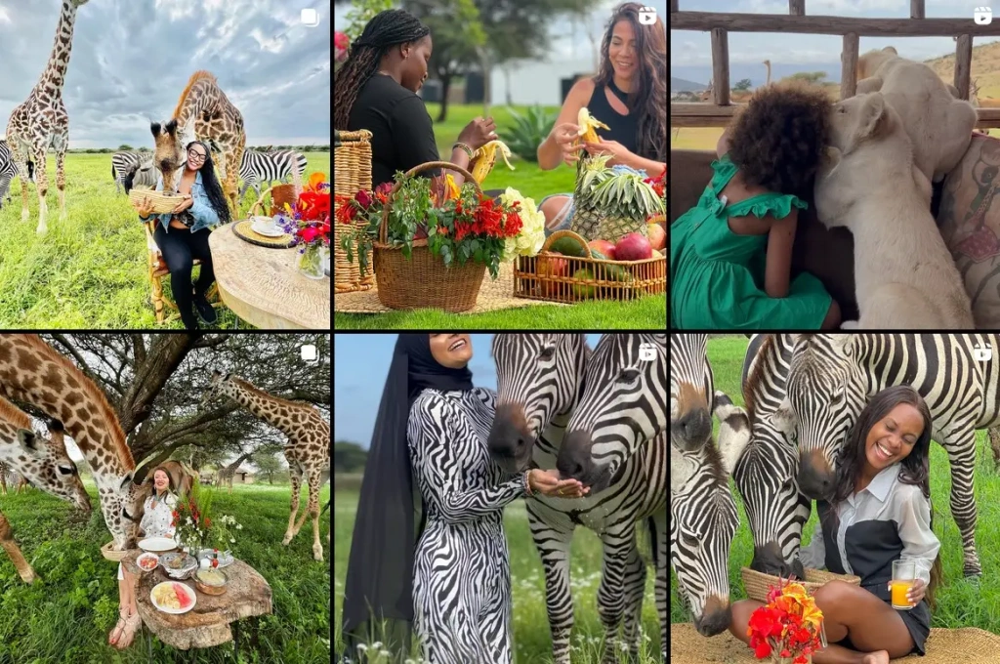
At Angelino Adventures, we intentionally do not collaborate with Serval Wildlife and advise guests and residents of Tanzania not to support this and other contact zoos. Another similar example is Cheetah’s Rock in Zanzibar, which positions itself as a wildlife rescue center. The approach to interacting with animals there is the same: they are purchased and kept in captivity, trained to allow people to get close and pose for photographs. These animals are merely exploited for profit, lacking any preparation for release back into the wild and receiving no genuine assistance.
If you want to help Africa's animals, participate in verified and effective programs. A good example is the collaborative project between the Frankfurt Zoological Society and Tanzanian safari operators—Serengeti De-snaring. This initiative aims to combat poaching in the Serengeti and free animals from traps. You can read more about this and other initiatives in our article on ecological projects in which we are involved.
All content on Angelino Adventures is created with expert insights and thorough research, in line with our Editorial Policy.


Want to know more about Tanzania adventures?
Get in touch with our team! We've explored all the top destinations across Tanzania. Our Kilimanjaro-based adventure consultants are ready to share tips and help you plan your unforgettable journey.
 Tanzania Safaris
Tanzania Safaris
 Kilimanjaro and other mountains
Kilimanjaro and other mountains
 About Angelino Adventures
About Angelino Adventures
 About Tanzania
About Tanzania